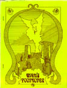

HISTORY, 1976-2012
Wyrm's Footnotes began publishing in 1976. Originally, it was a magazine that supported White Bear & Red Moon and other early Chaosium Board Games. Soon, however, it had become a forum for the discussion of Glorantha, and Chaosium's first role-playing game, RuneQuest. By issue 11, Wyrm's Footnotes officially became The RuneQuest Magazine.
In its short lifetime, Wyrm's Footnotes went through several changes. The first issue, edited by Greg Stafford, was a stapled fanzine, with a print run rumored to be as low as 25 copies. For the fourth issue, Wyrm's Footnotes began using real binding, but it became digest sized. The fifth issue was again full sized, and circulation had clearly improved considerably. With issue 8, published in 1980, Charlie Krank took over editorship of the magazine. Issue 11, of Spring 1981, was officially labelled Vol. II, No. 1. It sported a full color cover, the first that had ever adorned Wyrm's Footnotes.
Shortly after Wyrm's Footnotes 6, Chaosium began publication of their second magazine, Different Worlds. Unfortunately by 1982 it had become too expensive for Chaosium to publish both magazines. Different Worlds continued on, while Wyrm's Footnotes' publication came to an end. Originally Chaosium planned to publish a series of RuneQuest Companions. These books were to be 96 page supplements that contained assorted information on Glorantha, as Wyrm's Footnotes once had. The first RuneQuest Companion was published in 1983. It was the last Gloranthan supplement that Chaosium published for 9 years.
Since the first RuneQuest Companion was, in many ways, Wyrm's Footnotes 15, it has been included in this index, and is noted as "RQC".
In 1995, Wyrms Footprints was released. It was compiled by Reaching Moon Megacorp, and distributed by Chaosium. It contains reprints of many old Wyrm's Footnotes articles, some of them newly annotated or expanded. It addition, they was a small amount of new material in that volume. It too is included in this index, noted as "WFP".
In the summer of 2012, Wyrms Footnotes returned one more turn, courtesy of Moon Design Publications, who produced issue #15. There was talk of more, but that's been the last issue to date.
THEME ISSUES
A NOTE ON ORGANIZATION
Originally, Wyrm's Footnotes was the fanzine of White Bear, Red Moon, and Chaosium's other early games. However, as more issues were published, this emphasis began to change. By issue eleven, "The RuneQuest Magazine" was emblazoned on the cover of every issue of the magazine.
In compiling this index, I have decided to place this same emphasis on Gloranthan RuneQuest. Thus, the main body of this index is an organization of Gloranthan RuneQuest topics. Two appendices follow the main index. Appendix I contains articles on Non-Gloranthan RuneQuest, while Appendix II contains articles on non-RuneQuest topics. This includes ELRIC, NOMAD GODS, DRAGON PASS and many other board games produced by Chaosium. It should be noted that NOMAD GODS, DRAGON PASS and WHITE BEAR, RED MOON all take place in the world of Gloranthan, and that the information provided in them might be of interest to Gloranthan RuneQuest players.
Issue #15 bears the HeroQuest logo, but all of the content is system-neutral.
COPYRIGHT This index is © Copyright 1994-2020 Shannon Appelcline. It is released under a cc-by-4.0 (https://creativecommons.org/licenses/by/4.0/) license, allowing reuse with attribution.
MAIN INDEX
ACCESSORIES Miniatures: Archive RuneQuest Miniatures, by Rick Meints #15 pg 7-10 Record Sheets: Character Sheet Reverse, by Mark J. Lukens #9 pg 20 Foes Monster Sheet, by Mark J. Lukens #9 pg 21 Personal History Sheet, by Mark J. Lukens #9 pg 19 A Revised RQ Character Sheet and Monster Sheets, by John Sapienza #6 pg 32-39 Tables: Armor, by Mark J. Lukens #9 pg 18 Battlemagic Spells, by Mark J. Lukens #9 pg 17 Rune Identities, by Mark J. Lukens #9 pg 18 Rune Identities Corrections #11 pg 32 Standard RuneSpells, by Mark J. Lukens #9 pg 16
ADVENTURES Misc: Mini-Scenarious, by Dennis Sustare #9 pg 8-9 Misc, Solo: The Maze of Shaxry Oborok, by Alan LaVergne RQC pg 11-13,62-71 Dragon Pass, Sartar, Misc: Sartar High Council, by Greg Stafford #7 pg 10-17 WFP pg 96-103 Prax, Pavis, Big Rubble: Geedunk Dungeon, by Warren James (1) #5 pg 16-19 (1) Reprinted as "A Ruined Tenement" in BIG RUBBLE (Chaosium 4022-X)
BACKGROUND, MISC Misc: A Portion of the Jonstown Compendium, by Greg Stafford RQC pg 8-9+ Time in Glorantha, by Greg Stafford #4 pg 20-24 Chaos: Why Chaos is Bad, by Sandy Petersen #15 pg 80 Food: Walktapus Cooking, by Bill Johnson #2 pg 39-41 RQC pg 14-15 WFP pg 6-7 Organizations: Magical Regiments in the Hero Wars, by Greg Stafford, Jeff Richard & Ray Turney (1) #15 pg 73-77 Sample Guilds & Societies, by Anthony F. Ferrucci #9 pg 26-29 ALSO SEE CULTS War: Magical Regiments in the Hero Wars, by Greg Stafford, Jeff Richard & Ray Turney (1) #15 pg 73-77 War in Glorantha, by Greg Stafford & Jeff Richard #15 pg 58-62 (1) Parts of this article previously appeared in WYRM'S FOOTNOTES #7.
BACKGROUND, GEOGRAPHICAL Introduction: Introduction to the Surface World, by Greg Stafford #4 pg 12-14 WFP pg 26-27 Dragon Pass, Misc: Campaigns of Dragon Pass, by Greg Stafford & Jeff Richard (1) #15 pg 57 Languages of Dragon Pass, by Greg Stafford #6 pg 45-48 The Dragon's Eye WFP pg 39 Dragon Pass, Misc, Famous Sites: 1: A Village Near Alone, by Greg Stafford #5 pg 20 WFP pg 11 2: The Shaker Temple WFP pg 23 3: The Dragon's Eye WFP pg 39 4: Boldhome WFP pg 70 Dragon Pass, Dragonspine Mountains, Shaker Temple: The Shaker Temple WFP pg 23 Dragon Pass, Far Place: The Far Place, by Greg Stafford & Jeff Richard #15 pg 40-48 Dragon Pass, Sartar, Misc: The Cult of Wilms #15 pg 87 The Dispatch of Fadabius, by Jim McCormick #3 pg 35 RQC pg 29 The Fadabius Letters, by Jim McCormick #5 pg 10-13 The Fadabius Letters, by Jim McCormick #6 pg 40-41 The Harlot of Alone, by Ron Nance #2 pg 18 RQC pg 10 History of Sartar (1470-1611), by Greg Stafford (2) #11 pg 12 History of Sartar (1470-1613), by Greg Stafford (2) #12 pg 10-15 History of Sartar (1611-1613), by Greg Stafford (2) #13 pg 20-21 History of Sartar (1470-1613), by Greg Stafford (2) WFP pg 87-88 Magic Regiments, by Ray Turney & Greg Stafford #7 pg 29-30 Songs of the House of Sartar, by Greg Stafford with Jeff Richard #15 pg 33-34 Tribes of Sartar, by Greg Stafford #15 pg 30-32 A Village Near Alone, by Greg Stafford #5 pg 20 WFP pg 11 Dragon Pass, Sartar, Boldhome: Boldhome WFP pg 70 Prince Argrath's Entry into Boldhome, by Ron Nance #2 pg 32 RQC pg 33 Dragon Pass, Sartar, Sun Dome County: Sun Dome County, by Greg Stafford & Jeff Richard #15 pg 35-39 Dragon Pass, Stinking Forest: Aram-ya-Udram, by Greg Stafford & Tadashi Ehara #3 pg 15 The Ivory Plinth, by Greg Stafford #3 pg 15 RQC pg 59 Dragon Pass, Tarsh: The Carving of Tarsh, by Greg Stafford #2 pg 14-17 WFP pg 22-24 Dragon Pass, Upland Marsh: Delecti the Necromancer, by Stafford, Petersen, Hall, O'Brien, Meints, and Richard #15 pg 28-29 Upland Marsh Locations, by Stafford, Petersen, Hall, O'Brien, Meints, and Richard #15 pg 15-27 Lunar Empire: History: Zero Wane, by Greg Stafford (3) #10 pg 8-16 History: First Wane, by Greg Stafford (3) #11 pg 16-19 History: Second Wane, by Greg Stafford (3) #12 pg 22-25 History: Third Wane, by Greg Stafford (3) #13 pg 22-23 History: Fourth Wane, by Greg Stafford (3) #14 pg 28-31 Lunar Name Generator, by Paul Jaquays #11 pg 10-11 Map of the Lunar Empire, by Greg Stafford #7 pg 23 Red Moon in Prax, by Greg Stafford #4 pg 46-48 WFP pg 8-10 Maniria, Holy Country: Holy Country, by Greg Stafford RQC pg 16-25 Prax, Misc: Red Moon in Prax, by Greg Stafford #4 pg 46-48 Prax, Misc, Plants: Skullbush, by Sandy Petersen RQC pg 32 Prax, Dagori Inkarth: The Lightless Forest, Sporewood, by Greg Stafford #6 pg 31 Seas, Misc: The Sea of Neliom, by Charlie Krank #11 pg 20-22 WFP pg 19-21 Seas, Jrustela, Misc: The God Learners, by Greg Stafford #5 pg 33 The God Learners, by Greg Stafford WFP pg 25 (1) A previous version of this article appeared in DIFERENT WORLDS #28. (2) This information was originally published in DRAGON'S PAST #3, which was included in THE WILD HUNT #38. Each of these articles contains the same basic information, but the later ones (WF12, WF13 and WFP) contain expanded information on the years 1611 to 1613. The last article, in WFP, is comprehensive, containing all previous information. (3) The History of the Lunar Empire was reprinted in HEROES magazine. The zero wane appeared in VI.1, the first and second wane in VI.2 and the third and fourth wane in VI.5. In addition, the fifth wane, which did not appear in Wyrm's Footnotes, appeared in VI.6.
BACKGROUND, HISTORICAL First Age, Councilic: The Battle of Night and Day, by Greg Stafford #15 pg 63-72 The Last Song of Horned-Ulf WFP pg 28-30 The Storm War WFP pg 30 Second Age, God Learners: The God Learners, by Greg Stafford #5 pg 33 Third Age, Misc, Lunar: Zero Wane, by Greg Stafford (1) #10 pg 8-16 First Wane, by Greg Stafford (1) #11 pg 16-19 Second Wane, by Greg Stafford (1) #12 pg 22-25 Third Wane, by Greg Stafford (1) #13 pg 22-23 Fourth Wane, by Greg Stafford (1) #14 pg 28-31 Third Age, Hero Wars, Misc A History of my Black Horse Troop, by Greg Stafford #1 pg 19-25 RQC pg 54-58 Third Age, Hero Wars, Dragon Pass: Campaigns of Dragon Pass, by Greg Stafford & Jeff Richard (2) #15 pg 57 The Crown-Test of Leika Ballista, by Greg Stafford #14 pg 8-10 WFP pg 104-106 The Dispatch of Fadabius, by Jim McCormick #3 pg 35 RQC pg 29 The Fadabius Letters, by Jim McCormick #5 pg 10-13 The Fadabius Letters, by Jim McCormick #6 pg 40-41 History of Sartar (1470-1611), by Greg Stafford (3) #11 pg 12 History of Sartar (1470-1613), by Greg Stafford (3) #12 pg 10-15 History of Sartar (1611-1613), by Greg Stafford (3) #13 pg 20-21 History of Sartar (1470-1613), by Greg Stafford (3) WFP pg 87-88 Prince Argrath's Entry into Boldhome, by Ron Nance #2 pg 32 RQC pg 33 Starbrow's Rebellion, by Greg Stafford (4) WFP pg 86-94 Temple of the Wooden Sword, by Greg Stafford (4) WFP pg 12-18 War in Glorantha, by Greg Stafford & Jeff Richard #15 pg 58-62 Third Age, Hero Wars, Prax: Red Moon in Prax, by Greg Stafford #4 pg 46-48 WFP pg 8-10 (1) The History of the Lunar Empire was reprinted in HEROES magazine. The zero wane appeared in VI.1, the first and second wane in VI.2 and the third and fourth wane in VI.5. In addition, the fifth wane, which did not appear in Wyrm's Footnotes, appeared in VI.6. (2) A previous version of this article appeared in DIFERENT WORLDS #28. (3) This information was originally published in DRAGON'S PAST #3, which was included in THE WILD HUNT #38. Each of these articles contains the same basic information, but the later ones (WF12, WF13 and WFP) contain expanded information on the years 1611 to 1613. The last article, in WFP, is comprehensive, containing all previous information. (4) These are compilations of a number of earlier articles from Wyrm's Footnotes 9-14. See notes (3) and (4) under FICTION.
CREATURES Misc: The Birth of the Minotaur, by Greg Stafford #12 pg 9 Pavis Notes, by Steve Perrin #7 pg 7-9 Unicorns: Unicorns, by Sandy Petersen RQC pg 26-28 Walktapus: Walktapus Cooking, by Bill Johnson RQC pg 14-15 ALSO SEE RACES
CULTS Misc: An Expanded Cult Compatibility Chart RQC pg 6 An Index to RuneQuest Cults, by Sherman Kahn RQC pg 7 A Reference for Referees, by Doug Lenat, Greg Stafford & Charlie Krank #9 pg 22 What it Takes to "Convince the Examiners", by Greg Stafford (1) #13 pg 30-31 What it Takes to "Convince the Examiners", by Greg Stafford (1) WFP pg 84-85 Misc Gods: The Greater Deities, by Greg Stafford #6 pg 24-31 Misc Myths: Myths of Pre-Creation, by Greg Stafford #4 pg 36-39 WFP pg 32-34 Celestial Court, Misc: The Celestial Court, by Greg Stafford #5 pg 26-32 WFP pg 35-39 Celestial Court, Glorantha: Glorantha, by Greg Stafford #5 pg 28 WFP pg 36 Celestial Court, The Prime Mover: It: The Comic Unity, by Greg Stafford #4 pg 36-37 Celestial Court, Time: Time, by Greg Stafford #4 pg 20-24 Celestial Court, Uleria: How Uleria Adopted the Boggles, by Greg Stafford #5 pg 29-30 WFP pg 37-38 The Twins, by Greg Stafford #4 pg 38-39 WFP pg 33-34 Darkness, Misc: Deities of Darkness, by Greg Stafford #7 pg 24-28 WFP pg 40-43 Dragon, Misc: The Dragon Pantheon, by Greg Stafford #14 pg 14-26 The Dragonewt Creation Myth, by Greg Stafford #4 pg 37 WFP pg 33 Earth, Misc: Gods of the Earth, by Greg Stafford #9 pg 3-7 WFP pg 50-53 Mostali, Mostal: The Twins, by Greg Stafford #4 pg 38-39 WFP pg 33-34 Orlanthi, Misc: The Cult of Wilms #15 pg 87 Gods of Storm, by Greg Stafford #12 pg 4-9 WFP pg 64-70 The Orlanthi Pantheon, by Greg Stafford #13 pg 4-11 WFP pg 71-82 Orlanthi, Vingkot: Vingkot WFP pg 29 Sea, Misc: Spirits of the Sea, by Greg Stafford #8 pg 25-32 WFP pg 44-49 Solar, Misc: Gods of Fire & Light, by Greg Stafford #10 pg 20-25 WFP pg 54-58 Solar, Yelm: Yelm, by Greg Stafford #11 pg 24-27 WFP pg 59-63
EQUIPMENT Combat: A Note on Dragonewt Armor, by Greg Stafford #14 pg 26 Weapons of the Dragonewts, by Greg Stafford #14 pg 22-23 Magic Items: Plunder, by Rudy Kraft (1) #11 pg 7-9 (1) This is entirely new material, that I assume didn't make it into the Plunder book, published the year before.
FICTION Misc: The Halfbird WFP pg 83 A History of my Black Horse Troop, by Greg Stafford #1 pg 19-25 RQC pg 54-58 The Smell of a Rat, by Alan LaVergne RQC pg 34-53 Geographical, Dragon's Pass, Sartar, Dragon's Past:: The Crown-Test of Leika Ballista, by Greg Stafford #14 pg 8-10 WFP pg 104-106 The Founding of the Wooden Sword, by Greg Stafford (1) #11 pg 13 The Great Raid on the Temple of the Wooden Sword, by Greg Stafford (1) #9 pg 23-25 Humakt's Hall of Shame, by Greg Stafford (1) #11 pg 14 In the Defense of Orlanth, by Greg Stafford (1) #12 pg 11 Skirmish at the Wind Temple, by Greg Stafford (2) #12 pg 11-15 Starbrow's Rebellion, by Greg Stafford (3) WFP pg 86-94 Temple of the Wooden Sword, by Greg Stafford (1) #11 pg 14 Temple of the Wooden Sword, by Greg Stafford (4) WFP pg 12-18 The Travels of Redbird, by Greg Stafford #13 pg 20-21 Historical, First Age: The Battle of Night and Day, by Greg Stafford #15 pg 63-72 (1) Reprinted in WYRMS FOOTPRINTS (Chaosium, #4501). See note (4). (2) Reprinted in WYRMS FOOTPRINTS (Chaosium, #4501). See note (3). (3) This reprints "Skirmish at the Wind Temple" (from WF12), along with all the supporting documentation in that article, and also includes a "Recent History of Sartar" which is expanded from the one in WF11-13. (4) This reprints "The Founding of the Wooden Sword" (from WF11, as "The Founding of the Temple of the Wooden Sword"), "Temple of the the Wooden Sword" (from WF11, as "Londra's Saga"), "Humakt's Hall of Shame" (from WF11), "In the Defense of Orlanth" (from WF12), "Assault on the Isle of the Dead" (from ToTRM5 and DP8), "The Great Raid on the Temple of the Wooden Sword" (from WF9) and "The Dissolution of the Temple of the Wooden Sword" (from ToTRM5 and DP9)
MAGIC Misc: Magic Regiments, by Ray Turney & Greg Stafford #7 pg 29-30 Runes, by Greg Stafford #3 pg 17-26 Divine: Divination & Divine Intervention, by Greg Stafford #12 pg 19-21 Illusion Magic, by Greg Stafford RQC pg 30-31 Spirits: Rune-Glitch, by Tom Holsinger #13 pg 24-28
META History: Archive RuneQuest Miniatures, by Rick Meints #15 pg 7-10 Index: Wyrms Footnotes 1-14 Index #15 pg 81-87
NPCS Misc: Count Felagga's Mystic Menagerie, by Sandy Petersen #15 3-5 Some Beginning Characters, by Warren James & Greg Stafford #5 pg 34-37 Dragon Pass, Misc: Character Statistics, by Dave Hargrave #2 pg 27-31 WFP pg 107-110 Personalities from the Dragonewt March #14 pg 27 Special Dragon Pass Encounters, by Greg Stafford & Jeff Richard #15 pg 11-14 Dragon Pass, Sartar: Fazzur Wideread, by Greg Stafford & Charlie Krank #12 pg 16-18 The Harlot of Alone, by Ron Nance RQC pg 10 Londra of Londros, by Ken Kaufer #11 pg 15 Dragon Pass, Upland Marsh: Delecti the Necromancer, by Stafford, Petersen, Hall, O'Brien, Meints, and Richard #15 pg 28-29 Prax, Pavis: Rurik Runespear #13 pg 19 Seas, East Isles: Count Felagga's Mystic Menagerie, by Sandy Petersen #15 3-5
RACES Agimori, Misc: The Agimori, by John E. Boyle (1) #12 pg 26-31 Dragonewt, Misc: The Dragon's Eye WFP pg 39 The Dragon Pantheon, by Greg Stafford #14 pg 14-26 Morokanth, Misc: Men and Morokanth, by Elizabeth A. Wolcott #9 pg 10-14 Trolls, Misc: More on Trolls, by Sandy Petersen RQC pg 46-47 Trolls, Games: Troll Ball, by Greg Stafford & Friends (2) #7 pg 31-36 Trolls, History: History of the Race of Trolls, by Greg Stafford (3) #6 pg 6-13 Trolls, NPCs: Famous Dark Trolls of the Hero Wars, by Greg Stafford (3) WFP pg 95 (1) This article has been reprinted in BORDERLANDS (Chaosium 4015-X) and RIVER OF CRADLES (AH 8591) (2) This article was rewritten for TROLLPAK (Chaosium 4016-X) and thus reprinted in TROLLPAK (AH 8586) (3) A small porition of the "History of the Race of Trolls" was reprinted in WYRMS FOOTPRINTS (Chaosium, 4501) as "Famous Dark Trolls of the Hero Wars"
RULES Character Creation: Lunar Name Generator, by Paul Jaquays #11 pg 10-11 Combat: Rune-Glitch, by Tom Holsinger #14 pg 11-13 Official Questions & Answers, RQ2: Advice from Rurik, by Steve Perrin #11 pg 6 Advice from Rurik, by Steve Perrin #12 pg 2 Advice from Rurik, by Steve Perrin #13 pg 2 Advice from Rurik, by Steve Perrin #14 pg 6-7 Changes & Additions RQC pg 60-61 Clarifications & Changes, by Chris Kurzadkowski #10 pg 17-19 The Rambling Rune, by Steve Perrin #6 pg 17-22 Rambling RuneQuestions, by Steve Perrin #8 pg 17-24 Official Questions & Answers, RuneMasters: Corrections, Additions & Clarifications, by Steve Perrin #10 pg 7 Skills: Training System, by Lee Gold #11 pg 4-6
PREVIEWS A-Sharp: The Making of King of Dragon Pass 2.0, by David Dunham #15 pg 78-79 Chaosium: Runequest, by Steve Perrin #4 pg 34-35 SEE ALSO: DRAGON PASS, NOMAD GODS and WHITE BEAR & RED MOON in APPENDIX II
APPENDIX I: NON-GLORANTHAN RQ ARTICLES
BACKGROUND Questworld: Questworld, by Lynn Willis & Greg Stafford (1) #13 pg 12-18 (1) Also printed in DIFFERENT WORLDS #17 and included as part of QUESTWORLD (Chaosium 4018)
CREATURES Misc: Demons, by John Boyle #10 pg 29--30 Gateway Bestiary, by Misc #11 pg 28-30
APPENDIX II: NON-RUNQUEST ARTICLES
ARDUIN GRIMOIRE NPCs, White Bear & Red Moon: Character Statistics, by Dave Hargrave #2 pg 27-31 WFP pg 107-110 Previews: Arduin Grimoire #3 pg 8 DRAGON PASS [Chaosium] Rules, Misc: New Rules for: Dragon Pass, by Robert Corbett #8 pg 6-14
ELRIC BOARD GAME [Chaosium] Rules, Official Questions & Answers: Elric Questions and Suggestions, by Greg Stafford #5 pg 21-23 Rules, Variants: Elric Suggestions, by Mark Colborn #5 pg 24-25 Elric Variants, by Art Turney #4 pg 43-44
ENGAGE & DESTROY [Chaosium] Rules, Official Questions & Answers: Changes, Clarifications & Additions, by Chris Kurzadkowski #10 pg 26-28
FANTASY, GENERAL Games, Board: The Battle of Dunstop Castle #3 pg 27-34
THE FANTASY TRIP [Metagaming] Reviews: Melee #4 pg 25
GENERAL Meta: Reflections on the Structure of RPGs, by Stephen Lortz #5 pg 14-15
KING ARTHUR'S KNIGHTS [Chaosium] Rules, Misc: King Arthur's Knights Expansion, by Stephan Abbott #8 pg 15-16 Rules, Official Questions & Answers: King Arthur's Knights Expansion, by Stephan Abbott #8 pg 15-16
KNIGHTS OF THE ROUND TABLE [Little Soldiers Games] Reviews: Knights of the ROund Table #6 pg 44
LORDS & WIZARDS [FGU] Reviews: Lords & Wizards #4 pg 11
LORDS OF THE MIDDLE SEA [Chaosium] Background: Notes on the Physical Rationale, by Lynn Willis #5 pg 15 Rules, Official Errata: Errata, by Steve Lortz #6 pg 43 Errata #9 pg 15
NOMAD GODS [Chaosium] Background: More on Nomad Gods, by Misc #5 pg 6 New Units, by Greg Stafford #4 pg 49 Magic: Exotic Abilities in Prax, by Bob Corbett #5 pg 8 Expanded Shaman Rules, by Glenn Williams #7 pg 20-21 Rules, Combining Nomad Gods & White Bear, Red Moon: Footsteps, by John Coffey and Greg Stafford #4 pg 26-30 Rules, Misc: More on Nomad Gods, by Misc #5 pg 6-7 Rules, New Units: New Units, by Greg Stafford #4 pg 49 Rules, Official Errata: Nomad Gods Errata #4 pg 15-19 Rules, Official Questions & Answers: More on Nomad Gods, by Misc #5 pg 7 Wanderlore, by Greg Stafford #3 pg 9-10
OGRE [SJG] Reviews: Ogre #3 pg 41
PERILOUS ENCOUNTERS [Chaosium] Rules, Official Questions & Answers: Errata, by Steve Lortz #5 pg 40
THIEVES' WORLD [Chaosium] Advice, Players: Outworld Characters in TW, by Eric Goldberg #13 pg 29
TROY [Chaosium] Rules, Official Errata: Troy: Errata & Questions, by Don Dupont #4 pg 31-33 Rules, Official Questions & Answers: Wanderlore, by Greg Stafford #3 pg 9-10
WHITE BEAR & RED MOON [Chaosium] Magic: Magic Regiments, by Ray Turney & Greg Stafford #7 pg 29-30 Rules, Combining Nomad Gods & White Bear, Red Moon: Footsteps, by John Coffey and Greg Stafford #4 pg 26-30 Rules, New Units: Hungry Jack, by Greg Stafford #1 pg 27 Hydra, by Greg Stafford #1 pg 28 Keener Than, by Greg Stafford #1 pg 26 Masters of Magic, by Greg Stafford #1 pg 28 A Medley of New Units, by Burt Medley #5 pg 9 Sisters of Mercy, by Greg Stafford #3 pg 36-37 The TSEDDE, by Glenn Williams #7 pg 18-20 Walktapus, by Greg Stafford #2 pg 42 Rules, Official Questions & Answers: Changes to Second Edition WBRM, by Greg Stafford #2 pg 19-25 Wanderlore, by Greg Stafford #1 pg 6-9 Wanderlore, by Greg Stafford #2 pg 6-9 Wanderlore, by Greg Stafford #3 pg 9-10 Rules, Variants: Combat Results Table #2, by Greg Stafford #1 pg 15-16 Combat Results Table #3, by Mark Colborn #2 pg 13 Combat Results Table #4, by Jeff Pimper #3 pg 13 Movement after Combat, by Greg Stafford #1 pg 14 Moving On..., by Misc #1 pg 10-12 Moving On..., by Misc #2 pg 10-12 Moving On..., by Misc #3 pg 11-12 Physical Combat Rule Variants, by Steve List #4 pg 5-10 Prisoners, by Greg Stafford #1 pg 13 Random Direction, by Greg Stafford #2 pg 43 Where the Puppetour Troup Starts, by Greg Stafford #1 pg 17,29
Other Gaming Resources: [ More Magazine Indices | Ars Magica Campaigns ]